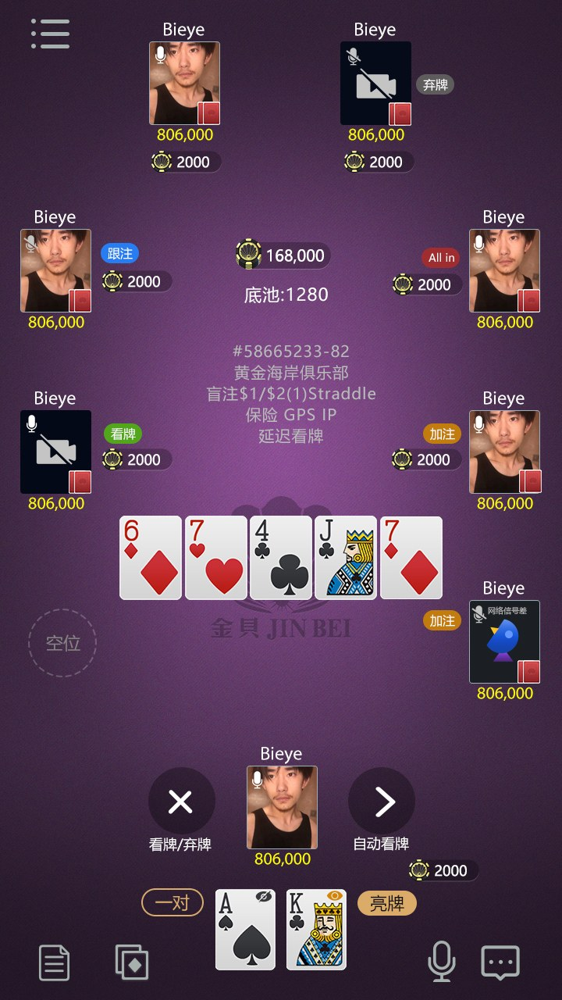
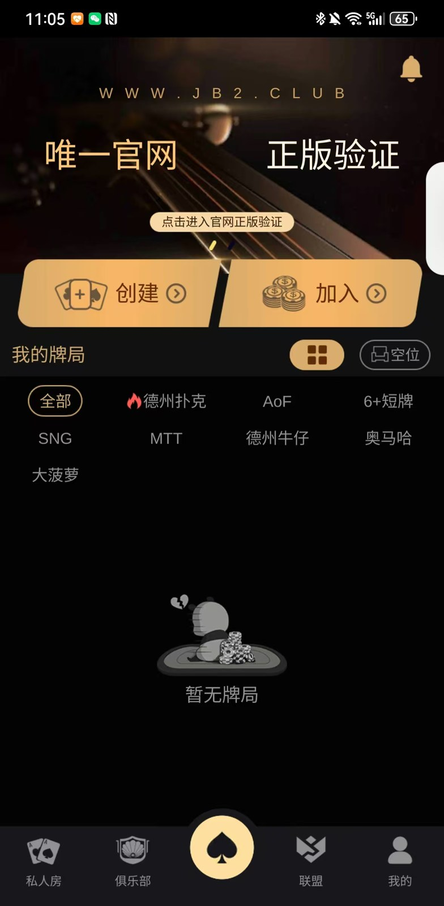

Repository files, documentation and screenshots provide the reviewable scope. Verify dependencies, builds and tests before deployment.
專案介紹
俱樂部、聯盟、成員與私人牌局
德州撲克俱樂部原始碼資料，展示建立俱樂部、聯盟、私人牌局、多人牌桌、帳戶介面及 Unity、Lua、C++ 工程內容。
README, technical documents and project files explain the visible implementation and its limitations.
Use only for lawful software development, education and evaluation. Follow licenses and regional rules.
Real product material
產品畫面

